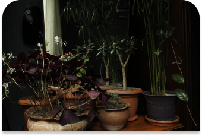
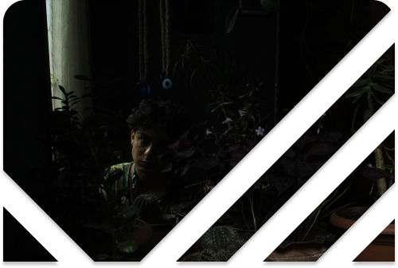

About
Giga Beruashvili (b. 2002) is a photographer
based in Tbilisi, Georgia
studying Digital Media and Communications at
Georgian Institute of Public Affaris (G.I.P.A). Favored style of
photography can not be pinned
as he takes all kinds of photos. As a relatively
new face on the scene, he
likes to experiment and has not settled in one
style of photography yet,
as for wether he plans on it or not, it is not
decided as for now.
Email Address: giga.beruashvili.dmc20@gipa.ge
Phone Number: +955 599 153 818

